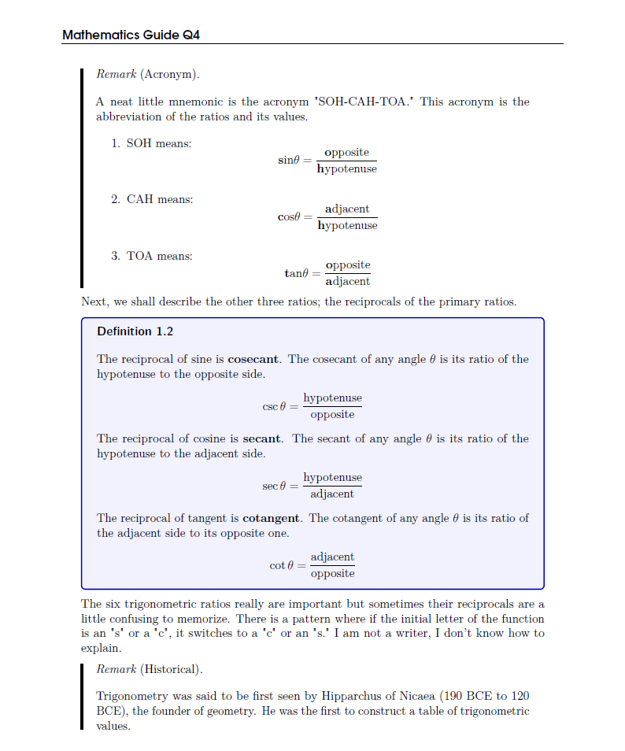

This page is dedicated to info about what I do with LaTeX, including my typesetting.
LaTeX Style
Whenever I make \(\LaTeX\) documents, I always try to make it look appealing. Before when I was starting out, I was on a stoic mindset of "it should be formal because I'm dealing with the same language researchers use for papers!"
Now I have seen it more appealing to make them attractive to serve them more useful for the reader. You can see from the image on the bottom.

How I made the document appearance is through the use of
.sty and
.cls files. I mostly use the
.sty file for the packages for formatting and typesetting, and the
.cls for the document layout and appearance.
You can download them here:
-
notescls.cls - The option demure,
\documentclass[demure]{notescls} is required when loading it without the style file. Disable it when the style file is included in the preamble. This is to color the section numbers.
Edit the footer and header in the file. Just find it, I don't want to explain.
-
notesty.sty - Disable the demure option in the document class if you are loading this alongside it.
If you do end up using these files, credit me only in the source (albeit PDF output is optional and appreciated too.)
WARNING! These files can be loaded independently from each other, but
compile your documents with LuaLaTeX. Any other \(\LaTeX\) compiler excluding XeLaTeX won't work to my knowledge (XeLaTeX is outdated.)
If you need a tutorial on how to add these files to your document, just use Google. If you're too advanced for that, check out this page.
How I make my TikZpictures
I am not that talented to learn TikZ (I am currently in the process of learning that right now) so I use a GUI editor to make the diagrams. The GUI is an online editor that is free (paid is optional),
Mathcha.io.
You already noticed from looking at the source code of my documents, everytime there is a tikzpicture it looks horrendous in its syntax. I just copy-pasted it from the site's drawing area.
How I write my LaTeX source code
This is
inspiration from Evan Chen, since he did something like this too. Aside from a few exceptions, I always try to make my source code clean. Some source code I provide are not always like this (mostly because I was only a couple months into \(\LaTeX\).)
Here is a PDF (insert link here in the future) that lists down how I style my source code. The keywords in capital in the document are described in
RFC 2119.